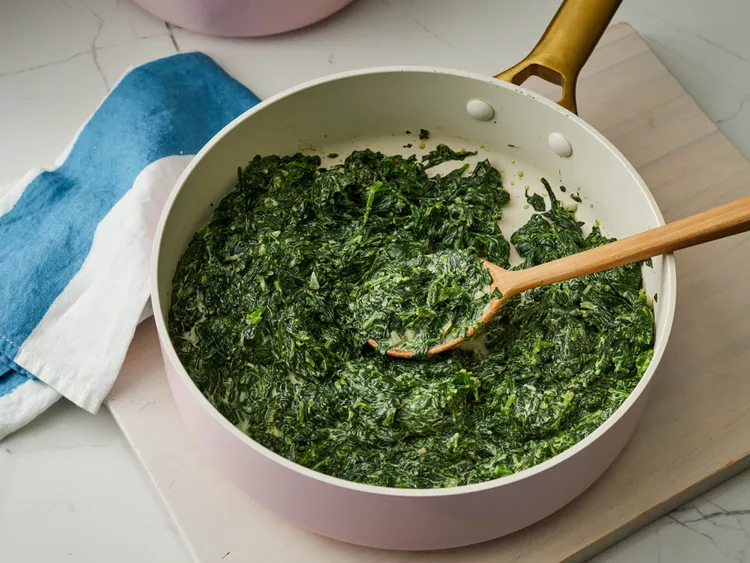

Fast and Easy Creamed Spinach
Back to recipes

Description
This is a recipe to explore if you aren't uset to eat spinach, prolly you will love it!
Let's learn how to prepair it below:
Ingredients:
- 2 teaspoons olive oil
- 2 (16 ounce) bags fresh spinach
- 1 pinch cayenne pepper, or to taste
- 1 pinch freshly grated nutmeg
- salt and freshly ground black pepper to taste
- 1 tablespoon butter
- 2 tablespoons minced shallot
- ¾ cup heavy whipping cream
- 1 teaspoon freshly grated lemon zest
- tablespoons finely shredded Parmigiano-Reggiano cheese (Optional)
Steps:
- Heat olive oil in a large soup pot over high heat; add spinach, cover, and cook for 1 minute. Uncover and gently stir until most of the leaves are bright green and wilted, about 2 minutes.
- Quickly drain spinach in a strainer and transfer to a plate lined with 4 or 5 paper towels. Once cool enough to handle, squeeze as much liquid from the spinach as possible. Transfer spinach to a cutting board and coarsely chop.
- Mix cayenne pepper, nutmeg, salt, and black pepper in a small bowl.
- Melt butter in a large skillet over medium heat; stir in shallot and cook until just barely golden and translucent, 3 to 4 minutes. Stir in seasoning mixture and pour in cream; increase heat to medium-high and simmer until the cream sauce reduces by about half, about 5 minutes. Stir in lemon zest.
- Reduce heat to low and toss spinach with cream sauce in skillet. Cook and stir until spinach is heated through and coated, about 2 minutes. Stir in Parmigiano-Reggiano cheese until thoroughly combined.
- Serve immediately.
Now, just enjoy it! Bon Apetit